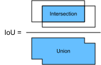
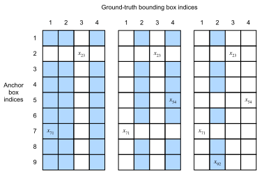

14.4. 锚框¶
目标检测算法通常会在输入图像中 采样大量区域，判断这些区域是否包含 感兴趣的物体，并调整区域的边界， 从而更准确地预测物体的 真实边界框（ground-truth bounding box）。 不同模型可能采用 不同的区域采样方案。 这里我们介绍其中一种方法： 它以每个像素为中心，生成多个具有不同尺度和宽高比的边界框。 这些边界框称为锚框（anchor box）。 我们将在 14.7节 中设计一个 基于锚框的目标检测模型。
首先，让我们修改打印精度， 以便输出更简洁。
%matplotlib inline
import torch
from d2l import torch as d2l
torch.set_printoptions(2) # Simplify printing accuracy
%matplotlib inline
from mxnet import gluon, image, np, npx
from d2l import mxnet as d2l
np.set_printoptions(2) # Simplify printing accuracy
npx.set_np()
14.4.1. 生成多个锚框¶
假设输入图像的高度为 \(h\)，宽度为 \(w\)。 我们以图像的每个像素为中心生成不同形状的锚框。 设缩放比为 \(s\in (0, 1]\)， 宽高比（宽度与高度之比）为 \(r > 0\)。 那么锚框的宽度和高度分别为 \(ws\sqrt{r}\) 和 \(hs/\sqrt{r}\)。 注意，当中心位置给定时，宽度和高度已知的锚框就确定了。
为了生成多个不同形状的锚框， 让我们设置一系列缩放比 \(s_1,\ldots, s_n\) 和 一系列宽高比 \(r_1,\ldots, r_m\)。 以每个像素为中心，使用这些缩放比和宽高比的所有组合时， 输入图像总共会有 \(whnm\) 个锚框。虽然这些锚框可能覆盖所有 真实边界框，但计算复杂度很容易过高。 在实践中， 我们只考虑包含 \(s_1\) 或 \(r_1\) 的组合：
也就是说，以同一像素为中心的锚框数量为 \(n+m-1\)。对于整个输入图像，我们将一共生成 \(wh(n+m-1)\) 个锚框。
上述生成锚框的方法在下面的 multibox_prior
函数中实现。我们指定输入图像、缩放比列表和宽高比列表，然后该函数将返回所有锚框。
#@save
def multibox_prior(data, sizes, ratios):
"""Generate anchor boxes with different shapes centered on each pixel."""
in_height, in_width = data.shape[-2:]
device, num_sizes, num_ratios = data.device, len(sizes), len(ratios)
boxes_per_pixel = (num_sizes + num_ratios - 1)
size_tensor = torch.tensor(sizes, device=device)
ratio_tensor = torch.tensor(ratios, device=device)
# Offsets are required to move the anchor to the center of a pixel. Since
# a pixel has height=1 and width=1, we choose to offset our centers by 0.5
offset_h, offset_w = 0.5, 0.5
steps_h = 1.0 / in_height # Scaled steps in y axis
steps_w = 1.0 / in_width # Scaled steps in x axis
# Generate all center points for the anchor boxes
center_h = (torch.arange(in_height, device=device) + offset_h) * steps_h
center_w = (torch.arange(in_width, device=device) + offset_w) * steps_w
shift_y, shift_x = torch.meshgrid(center_h, center_w, indexing='ij')
shift_y, shift_x = shift_y.reshape(-1), shift_x.reshape(-1)
# Generate `boxes_per_pixel` number of heights and widths that are later
# used to create anchor box corner coordinates (xmin, xmax, ymin, ymax)
w = torch.cat((size_tensor * torch.sqrt(ratio_tensor[0]),
sizes[0] * torch.sqrt(ratio_tensor[1:])))\
* in_height / in_width # Handle rectangular inputs
h = torch.cat((size_tensor / torch.sqrt(ratio_tensor[0]),
sizes[0] / torch.sqrt(ratio_tensor[1:])))
# Divide by 2 to get half height and half width
anchor_manipulations = torch.stack((-w, -h, w, h)).T.repeat(
in_height * in_width, 1) / 2
# Each center point will have `boxes_per_pixel` number of anchor boxes, so
# generate a grid of all anchor box centers with `boxes_per_pixel` repeats
out_grid = torch.stack([shift_x, shift_y, shift_x, shift_y],
dim=1).repeat_interleave(boxes_per_pixel, dim=0)
output = out_grid + anchor_manipulations
return output.unsqueeze(0)
#@save
def multibox_prior(data, sizes, ratios):
"""Generate anchor boxes with different shapes centered on each pixel."""
in_height, in_width = data.shape[-2:]
device, num_sizes, num_ratios = data.ctx, len(sizes), len(ratios)
boxes_per_pixel = (num_sizes + num_ratios - 1)
size_tensor = np.array(sizes, ctx=device)
ratio_tensor = np.array(ratios, ctx=device)
# Offsets are required to move the anchor to the center of a pixel. Since
# a pixel has height=1 and width=1, we choose to offset our centers by 0.5
offset_h, offset_w = 0.5, 0.5
steps_h = 1.0 / in_height # Scaled steps in y-axis
steps_w = 1.0 / in_width # Scaled steps in x-axis
# Generate all center points for the anchor boxes
center_h = (np.arange(in_height, ctx=device) + offset_h) * steps_h
center_w = (np.arange(in_width, ctx=device) + offset_w) * steps_w
shift_x, shift_y = np.meshgrid(center_w, center_h)
shift_x, shift_y = shift_x.reshape(-1), shift_y.reshape(-1)
# Generate `boxes_per_pixel` number of heights and widths that are later
# used to create anchor box corner coordinates (xmin, xmax, ymin, ymax)
w = np.concatenate((size_tensor * np.sqrt(ratio_tensor[0]),
sizes[0] * np.sqrt(ratio_tensor[1:]))) \
* in_height / in_width # Handle rectangular inputs
h = np.concatenate((size_tensor / np.sqrt(ratio_tensor[0]),
sizes[0] / np.sqrt(ratio_tensor[1:])))
# Divide by 2 to get half height and half width
anchor_manipulations = np.tile(np.stack((-w, -h, w, h)).T,
(in_height * in_width, 1)) / 2
# Each center point will have `boxes_per_pixel` number of anchor boxes, so
# generate a grid of all anchor box centers with `boxes_per_pixel` repeats
out_grid = np.stack([shift_x, shift_y, shift_x, shift_y],
axis=1).repeat(boxes_per_pixel, axis=0)
output = out_grid + anchor_manipulations
return np.expand_dims(output, axis=0)
我们可以看到，返回的锚框变量 Y 的形状是 （批量大小，锚框数量，4）。
img = d2l.plt.imread('../img/catdog.jpg')
h, w = img.shape[:2]
print(h, w)
X = torch.rand(size=(1, 3, h, w)) # Construct input data
Y = multibox_prior(X, sizes=[0.75, 0.5, 0.25], ratios=[1, 2, 0.5])
Y.shape
img = image.imread('../img/catdog.jpg').asnumpy()
h, w = img.shape[:2]
print(h, w)
X = np.random.uniform(size=(1, 3, h, w)) # Construct input data
Y = multibox_prior(X, sizes=[0.75, 0.5, 0.25], ratios=[1, 2, 0.5])
Y.shape
把锚框变量 Y
的形状改为（图像高度、图像宽度、以同一像素为中心的锚框数量、4） 之后，
我们就可以获得以指定像素位置为中心的所有锚框。 在下面， 我们访问以 (250,
250) 为中心的第一个锚框。它有四个元素：锚框左上角的 \((x, y)\)
轴坐标和右下角的 \((x, y)\) 轴坐标。 两个轴的坐标值
分别除以了图像的宽度和高度。
boxes = Y.reshape(h, w, 5, 4)
boxes[250, 250, 0, :]
boxes = Y.reshape(h, w, 5, 4)
boxes[250, 250, 0, :]
为了在图像中显示以一个像素为中心的所有锚框， 我们定义下面的
show_bboxes 函数，用于在图像上绘制多个边界框。
#@save
def show_bboxes(axes, bboxes, labels=None, colors=None):
"""Show bounding boxes."""
def make_list(obj, default_values=None):
if obj is None:
obj = default_values
elif not isinstance(obj, (list, tuple)):
obj = [obj]
return obj
labels = make_list(labels)
colors = make_list(colors, ['b', 'g', 'r', 'm', 'c'])
for i, bbox in enumerate(bboxes):
color = colors[i % len(colors)]
rect = d2l.bbox_to_rect(bbox.detach().numpy(), color)
axes.add_patch(rect)
if labels and len(labels) > i:
text_color = 'k' if color == 'w' else 'w'
axes.text(rect.xy[0], rect.xy[1], labels[i],
va='center', ha='center', fontsize=9, color=text_color,
bbox=dict(facecolor=color, lw=0))
#@save
def show_bboxes(axes, bboxes, labels=None, colors=None):
"""Show bounding boxes."""
def make_list(obj, default_values=None):
if obj is None:
obj = default_values
elif not isinstance(obj, (list, tuple)):
obj = [obj]
return obj
labels = make_list(labels)
colors = make_list(colors, ['b', 'g', 'r', 'm', 'c'])
for i, bbox in enumerate(bboxes):
color = colors[i % len(colors)]
rect = d2l.bbox_to_rect(bbox.asnumpy(), color)
axes.add_patch(rect)
if labels and len(labels) > i:
text_color = 'k' if color == 'w' else 'w'
axes.text(rect.xy[0], rect.xy[1], labels[i],
va='center', ha='center', fontsize=9, color=text_color,
bbox=dict(facecolor=color, lw=0))
正如我们刚才看到的，变量 boxes 中 \(x\) 轴和 \(y\)
轴的坐标值分别除以了图像的宽度和高度。 在绘制锚框时，
我们需要恢复它们原始的坐标值； 因此，我们在下面定义变量
bbox_scale。 现在，我们可以在图像中绘制以 (250, 250)
为中心的所有锚框了。 正如你所看到的，缩放比为 0.75、宽高比为 1
的蓝色锚框很好地 框住了图像中的狗。
d2l.set_figsize()
bbox_scale = torch.tensor((w, h, w, h))
fig = d2l.plt.imshow(img)
show_bboxes(fig.axes, boxes[250, 250, :, :] * bbox_scale,
['s=0.75, r=1', 's=0.5, r=1', 's=0.25, r=1', 's=0.75, r=2',
's=0.75, r=0.5'])
d2l.set_figsize()
bbox_scale = np.array((w, h, w, h))
fig = d2l.plt.imshow(img)
show_bboxes(fig.axes, boxes[250, 250, :, :] * bbox_scale,
['s=0.75, r=1', 's=0.5, r=1', 's=0.25, r=1', 's=0.75, r=2',
's=0.75, r=0.5'])
14.4.2. 交并比（IoU）¶
我们刚才提到，锚框“很好地”框住了图像中的狗。 如果已知物体的真实边界框，那么这里的“好”该如何量化呢？ 直观地说，我们可以度量 锚框与真实边界框之间的相似性。 我们知道Jaccard 指数可以度量两个集合之间的相似性。给定集合 \(\mathcal{A}\) 和 \(\mathcal{B}\)，它们的 Jaccard 指数是交集大小除以并集大小：
实际上，我们可以把任意边界框的像素区域看作一个像素集合。 这样，我们就可以用两个边界框的像素集合的 Jaccard 指数来度量它们的相似性。对于两个边界框，我们通常把它们的 Jaccard 指数称为交并比（IoU），即它们相交面积与合并面积的比值，如 图14.4.1 所示。 IoU 的取值范围在 0 到 1 之间： 0 表示两个边界框完全不重叠， 而 1 表示两个边界框相等。

图14.4.1 IoU 是两个边界框相交面积与合并面积之比。¶
在本节的剩余部分中，我们将使用 IoU
来度量锚框与真实边界框之间、以及不同锚框之间的相似性。
给定两个锚框或边界框列表， 下面的 box_iou 计算这两个列表之间的两两
IoU。
#@save
def box_iou(boxes1, boxes2):
"""Compute pairwise IoU across two lists of anchor or bounding boxes."""
box_area = lambda boxes: ((boxes[:, 2] - boxes[:, 0]) *
(boxes[:, 3] - boxes[:, 1]))
# Shape of `boxes1`, `boxes2`, `areas1`, `areas2`: (no. of boxes1, 4),
# (no. of boxes2, 4), (no. of boxes1,), (no. of boxes2,)
areas1 = box_area(boxes1)
areas2 = box_area(boxes2)
# Shape of `inter_upperlefts`, `inter_lowerrights`, `inters`: (no. of
# boxes1, no. of boxes2, 2)
inter_upperlefts = torch.max(boxes1[:, None, :2], boxes2[:, :2])
inter_lowerrights = torch.min(boxes1[:, None, 2:], boxes2[:, 2:])
inters = (inter_lowerrights - inter_upperlefts).clamp(min=0)
# Shape of `inter_areas` and `union_areas`: (no. of boxes1, no. of boxes2)
inter_areas = inters[:, :, 0] * inters[:, :, 1]
union_areas = areas1[:, None] + areas2 - inter_areas
return inter_areas / union_areas
#@save
def box_iou(boxes1, boxes2):
"""Compute pairwise IoU across two lists of anchor or bounding boxes."""
box_area = lambda boxes: ((boxes[:, 2] - boxes[:, 0]) *
(boxes[:, 3] - boxes[:, 1]))
# Shape of `boxes1`, `boxes2`, `areas1`, `areas2`: (no. of boxes1, 4),
# (no. of boxes2, 4), (no. of boxes1,), (no. of boxes2,)
areas1 = box_area(boxes1)
areas2 = box_area(boxes2)
# Shape of `inter_upperlefts`, `inter_lowerrights`, `inters`: (no. of
# boxes1, no. of boxes2, 2)
inter_upperlefts = np.maximum(boxes1[:, None, :2], boxes2[:, :2])
inter_lowerrights = np.minimum(boxes1[:, None, 2:], boxes2[:, 2:])
inters = (inter_lowerrights - inter_upperlefts).clip(min=0)
# Shape of `inter_areas` and `union_areas`: (no. of boxes1, no. of boxes2)
inter_areas = inters[:, :, 0] * inters[:, :, 1]
union_areas = areas1[:, None] + areas2 - inter_areas
return inter_areas / union_areas
14.4.3. 在训练数据中标注锚框¶
在训练数据集中， 我们把每个锚框都看作一个训练样例。 为了训练目标检测模型， 我们需要为每个锚框提供类别（class）和偏移量（offset）标签， 其中前者是与该锚框相关的物体的类别， 后者是真实边界框相对于该锚框的偏移量。 在预测时， 对于每张图像， 我们生成多个锚框， 预测所有锚框的类别和偏移量， 根据预测的偏移量调整它们的位置，得到预测的边界框， 最后只输出那些 满足特定条件的预测边界框。
如我们所知，目标检测训练集 带有 真实边界框的位置标签 以及其中所包围物体的类别标签。 为了标注任何生成的锚框， 我们参考与锚框最接近的、被分配给它的真实边界框的位置和类别标签。 下面， 我们描述一种把最接近的真实边界框分配给锚框的算法。
14.4.3.1. 将真实边界框分配给锚框¶
给定一张图像， 假设锚框为 \(A_1, A_2, \ldots, A_{n_a}\)，真实边界框为 \(B_1, B_2, \ldots, B_{n_b}\)，其中 \(n_a \geq n_b\)。 让我们定义一个矩阵 \(\mathbf{X} \in \mathbb{R}^{n_a \times n_b}\)，其位于第 \(i^\textrm{th}\) 行和第 \(j^\textrm{th}\) 列的元素 \(x_{ij}\) 是锚框 \(A_i\) 与真实边界框 \(B_j\) 的 IoU。该算法由以下步骤组成：
在矩阵 \(\mathbf{X}\) 中找到最大的元素，并将其行索引和列索引分别记为 \(i_1\) 和 \(j_1\)。然后把真实边界框 \(B_{j_1}\) 分配给锚框 \(A_{i_1}\)。这非常直观，因为在所有锚框与真实边界框的组合中，\(A_{i_1}\) 和 \(B_{j_1}\) 最为接近。第一次分配之后，丢弃矩阵 \(\mathbf{X}\) 中第 \({i_1}^\textrm{th}\) 行和第 \({j_1}^\textrm{th}\) 列的所有元素。
在矩阵 \(\mathbf{X}\) 的剩余元素中找到最大的元素，并将其行索引和列索引分别记为 \(i_2\) 和 \(j_2\)。我们把真实边界框 \(B_{j_2}\) 分配给锚框 \(A_{i_2}\)，并丢弃矩阵 \(\mathbf{X}\) 中第 \({i_2}^\textrm{th}\) 行和第 \({j_2}^\textrm{th}\) 列的所有元素。
此时，矩阵 \(\mathbf{X}\) 中两行和两列中的元素已被丢弃。我们继续操作，直到矩阵 \(\mathbf{X}\) 中 \(n_b\) 列的所有元素都被丢弃。此时，我们已经为 \(n_b\) 个锚框各分配了一个真实边界框。
只遍历剩下的 \(n_a - n_b\) 个锚框。例如，给定任意锚框 \(A_i\)，在矩阵 \(\mathbf{X}\) 的第 \(i^\textrm{th}\) 行中找出与 \(A_i\) 的 IoU 最大的真实边界框 \(B_j\)，仅当该 IoU 大于预定义阈值时，才把 \(B_j\) 分配给 \(A_i\)。
让我们用一个具体的例子来说明上述算法。 如 图14.4.2（左）所示，假设矩阵 \(\mathbf{X}\) 中的最大值是 \(x_{23}\)，我们把真实边界框 \(B_3\) 分配给锚框 \(A_2\)。 然后，丢弃矩阵中第 2 行和第 3 列的所有元素，在剩余元素（阴影区域）中找到最大的 \(x_{71}\)，并把真实边界框 \(B_1\) 分配给锚框 \(A_7\)。 接下来，如 图14.4.2（中）所示，丢弃矩阵中第 7 行和第 1 列的所有元素，在剩余元素（阴影区域）中找到最大的 \(x_{54}\)，并把真实边界框 \(B_4\) 分配给锚框 \(A_5\)。 最后，如 图14.4.2（右）所示，丢弃矩阵中第 5 行和第 4 列的所有元素，在剩余元素（阴影区域）中找到最大的 \(x_{92}\)，并把真实边界框 \(B_2\) 分配给锚框 \(A_9\)。 之后，我们只需要遍历 剩余的锚框 \(A_1, A_3, A_4, A_6, A_8\)，并根据阈值决定是否给它们分配真实边界框。

图14.4.2 将真实边界框分配给锚框。¶
该算法在下面的 assign_anchor_to_bbox 函数中实现。
#@save
def assign_anchor_to_bbox(ground_truth, anchors, device, iou_threshold=0.5):
"""Assign closest ground-truth bounding boxes to anchor boxes."""
num_anchors, num_gt_boxes = anchors.shape[0], ground_truth.shape[0]
# Element x_ij in the i-th row and j-th column is the IoU of the anchor
# box i and the ground-truth bounding box j
jaccard = box_iou(anchors, ground_truth)
# Initialize the tensor to hold the assigned ground-truth bounding box for
# each anchor
anchors_bbox_map = torch.full((num_anchors,), -1, dtype=torch.long,
device=device)
# Assign ground-truth bounding boxes according to the threshold
max_ious, indices = torch.max(jaccard, dim=1)
anc_i = torch.nonzero(max_ious >= iou_threshold).reshape(-1)
box_j = indices[max_ious >= iou_threshold]
anchors_bbox_map[anc_i] = box_j
col_discard = torch.full((num_anchors,), -1)
row_discard = torch.full((num_gt_boxes,), -1)
for _ in range(num_gt_boxes):
max_idx = torch.argmax(jaccard) # Find the largest IoU
box_idx = (max_idx % num_gt_boxes).long()
anc_idx = (max_idx / num_gt_boxes).long()
anchors_bbox_map[anc_idx] = box_idx
jaccard[:, box_idx] = col_discard
jaccard[anc_idx, :] = row_discard
return anchors_bbox_map
#@save
def assign_anchor_to_bbox(ground_truth, anchors, device, iou_threshold=0.5):
"""Assign closest ground-truth bounding boxes to anchor boxes."""
num_anchors, num_gt_boxes = anchors.shape[0], ground_truth.shape[0]
# Element x_ij in the i-th row and j-th column is the IoU of the anchor
# box i and the ground-truth bounding box j
jaccard = box_iou(anchors, ground_truth)
# Initialize the tensor to hold the assigned ground-truth bounding box for
# each anchor
anchors_bbox_map = np.full((num_anchors,), -1, dtype=np.int32, ctx=device)
# Assign ground-truth bounding boxes according to the threshold
max_ious, indices = np.max(jaccard, axis=1), np.argmax(jaccard, axis=1)
anc_i = np.nonzero(max_ious >= iou_threshold)[0]
box_j = indices[max_ious >= iou_threshold]
anchors_bbox_map[anc_i] = box_j
col_discard = np.full((num_anchors,), -1)
row_discard = np.full((num_gt_boxes,), -1)
for _ in range(num_gt_boxes):
max_idx = np.argmax(jaccard) # Find the largest IoU
box_idx = (max_idx % num_gt_boxes).astype('int32')
anc_idx = (max_idx / num_gt_boxes).astype('int32')
anchors_bbox_map[anc_idx] = box_idx
jaccard[:, box_idx] = col_discard
jaccard[anc_idx, :] = row_discard
return anchors_bbox_map
14.4.3.2. 标注类别和偏移量¶
现在我们可以为每个锚框标注类别和偏移量。假设锚框 \(A\) 被分配了 一个真实边界框 \(B\)。 一方面， 锚框 \(A\) 的类别将被 标注为 \(B\) 的类别。 另一方面， 锚框 \(A\) 的偏移量 将根据 \(B\) 与 \(A\) 的中心坐标之间的相对位置 以及这两个框之间的相对大小 来标注。 鉴于数据集中不同框的位置和大小各不相同， 我们可以对那些相对位置和相对大小 应用变换， 从而得到 分布更均匀、更容易拟合的偏移量。 这里我们描述一种常用的变换。 给定 \(A\) 和 \(B\) 的中心坐标分别为 \((x_a, y_a)\) 和 \((x_b, y_b)\)， 宽度分别为 \(w_a\) 和 \(w_b\)， 高度分别为 \(h_a\) 和 \(h_b\)。 我们可以把 \(A\) 的偏移量标注为
其中常量的默认值为
\(\mu_x = \mu_y = \mu_w = \mu_h = 0, \sigma_x=\sigma_y=0.1\)，\(\sigma_w=\sigma_h=0.2\)。
这种变换在下面的 offset_boxes 函数中实现。
#@save
def offset_boxes(anchors, assigned_bb, eps=1e-6):
"""Transform for anchor box offsets."""
c_anc = d2l.box_corner_to_center(anchors)
c_assigned_bb = d2l.box_corner_to_center(assigned_bb)
offset_xy = 10 * (c_assigned_bb[:, :2] - c_anc[:, :2]) / c_anc[:, 2:]
offset_wh = 5 * torch.log(eps + c_assigned_bb[:, 2:] / c_anc[:, 2:])
offset = torch.cat([offset_xy, offset_wh], axis=1)
return offset
#@save
def offset_boxes(anchors, assigned_bb, eps=1e-6):
"""Transform for anchor box offsets."""
c_anc = d2l.box_corner_to_center(anchors)
c_assigned_bb = d2l.box_corner_to_center(assigned_bb)
offset_xy = 10 * (c_assigned_bb[:, :2] - c_anc[:, :2]) / c_anc[:, 2:]
offset_wh = 5 * np.log(eps + c_assigned_bb[:, 2:] / c_anc[:, 2:])
offset = np.concatenate([offset_xy, offset_wh], axis=1)
return offset
如果某个锚框没有被分配真实边界框，我们只需把该锚框的类别标注为“背景”。
类别为背景的锚框通常称为负锚框， 其余的称为正锚框。
我们实现下面的 multibox_target 函数， 为了用真实边界框（labels
参数）来为锚框（anchors 参数）标注类别和偏移量。
该函数把背景类别设为 0，并把新类别的整数索引加一。
#@save
def multibox_target(anchors, labels):
"""Label anchor boxes using ground-truth bounding boxes."""
batch_size, anchors = labels.shape[0], anchors.squeeze(0)
batch_offset, batch_mask, batch_class_labels = [], [], []
device, num_anchors = anchors.device, anchors.shape[0]
for i in range(batch_size):
label = labels[i, :, :]
anchors_bbox_map = assign_anchor_to_bbox(
label[:, 1:], anchors, device)
bbox_mask = ((anchors_bbox_map >= 0).float().unsqueeze(-1)).repeat(
1, 4)
# Initialize class labels and assigned bounding box coordinates with
# zeros
class_labels = torch.zeros(num_anchors, dtype=torch.long,
device=device)
assigned_bb = torch.zeros((num_anchors, 4), dtype=torch.float32,
device=device)
# Label classes of anchor boxes using their assigned ground-truth
# bounding boxes. If an anchor box is not assigned any, we label its
# class as background (the value remains zero)
indices_true = torch.nonzero(anchors_bbox_map >= 0)
bb_idx = anchors_bbox_map[indices_true]
class_labels[indices_true] = label[bb_idx, 0].long() + 1
assigned_bb[indices_true] = label[bb_idx, 1:]
# Offset transformation
offset = offset_boxes(anchors, assigned_bb) * bbox_mask
batch_offset.append(offset.reshape(-1))
batch_mask.append(bbox_mask.reshape(-1))
batch_class_labels.append(class_labels)
bbox_offset = torch.stack(batch_offset)
bbox_mask = torch.stack(batch_mask)
class_labels = torch.stack(batch_class_labels)
return (bbox_offset, bbox_mask, class_labels)
#@save
def multibox_target(anchors, labels):
"""Label anchor boxes using ground-truth bounding boxes."""
batch_size, anchors = labels.shape[0], anchors.squeeze(0)
batch_offset, batch_mask, batch_class_labels = [], [], []
device, num_anchors = anchors.ctx, anchors.shape[0]
for i in range(batch_size):
label = labels[i, :, :]
anchors_bbox_map = assign_anchor_to_bbox(
label[:, 1:], anchors, device)
bbox_mask = np.tile((np.expand_dims((anchors_bbox_map >= 0),
axis=-1)), (1, 4)).astype('int32')
# Initialize class labels and assigned bounding box coordinates with
# zeros
class_labels = np.zeros(num_anchors, dtype=np.int32, ctx=device)
assigned_bb = np.zeros((num_anchors, 4), dtype=np.float32,
ctx=device)
# Label classes of anchor boxes using their assigned ground-truth
# bounding boxes. If an anchor box is not assigned any, we label its
# class as background (the value remains zero)
indices_true = np.nonzero(anchors_bbox_map >= 0)[0]
bb_idx = anchors_bbox_map[indices_true]
class_labels[indices_true] = label[bb_idx, 0].astype('int32') + 1
assigned_bb[indices_true] = label[bb_idx, 1:]
# Offset transformation
offset = offset_boxes(anchors, assigned_bb) * bbox_mask
batch_offset.append(offset.reshape(-1))
batch_mask.append(bbox_mask.reshape(-1))
batch_class_labels.append(class_labels)
bbox_offset = np.stack(batch_offset)
bbox_mask = np.stack(batch_mask)
class_labels = np.stack(batch_class_labels)
return (bbox_offset, bbox_mask, class_labels)
14.4.3.3. 一个例子¶
让我们通过一个具体的例子来说明锚框标注。 我们为加载图像中的狗和猫定义真实边界框， 其中第一个元素是类别（0 表示狗，1 表示猫），其余四个元素是 \((x, y)\) 轴坐标 表示的左上角和右下角 （范围在 0 到 1 之间）。 我们还构造五个待标注的锚框， 使用左上角和右下角的 坐标表示： \(A_0, \ldots, A_4\)（索引从 0 开始）。 然后我们在图像中绘制这些真实边界框 和锚框。
ground_truth = torch.tensor([[0, 0.1, 0.08, 0.52, 0.92],
[1, 0.55, 0.2, 0.9, 0.88]])
anchors = torch.tensor([[0, 0.1, 0.2, 0.3], [0.15, 0.2, 0.4, 0.4],
[0.63, 0.05, 0.88, 0.98], [0.66, 0.45, 0.8, 0.8],
[0.57, 0.3, 0.92, 0.9]])
fig = d2l.plt.imshow(img)
show_bboxes(fig.axes, ground_truth[:, 1:] * bbox_scale, ['dog', 'cat'], 'k')
show_bboxes(fig.axes, anchors * bbox_scale, ['0', '1', '2', '3', '4']);
ground_truth = np.array([[0, 0.1, 0.08, 0.52, 0.92],
[1, 0.55, 0.2, 0.9, 0.88]])
anchors = np.array([[0, 0.1, 0.2, 0.3], [0.15, 0.2, 0.4, 0.4],
[0.63, 0.05, 0.88, 0.98], [0.66, 0.45, 0.8, 0.8],
[0.57, 0.3, 0.92, 0.9]])
fig = d2l.plt.imshow(img)
show_bboxes(fig.axes, ground_truth[:, 1:] * bbox_scale, ['dog', 'cat'], 'k')
show_bboxes(fig.axes, anchors * bbox_scale, ['0', '1', '2', '3', '4']);
使用上面定义的 multibox_target 函数， 我们可以为狗和猫基于真实边界框
标注这些锚框的类别和偏移量。 在这个例子中， 背景、狗和猫类别的索引
分别为 0、1 和 2。 下面我们为锚框和真实边界框的样例增加一个维度。
labels = multibox_target(anchors.unsqueeze(dim=0),
ground_truth.unsqueeze(dim=0))
labels = multibox_target(np.expand_dims(anchors, axis=0),
np.expand_dims(ground_truth, axis=0))
返回结果中有三项，都是张量格式。 第三项包含输入锚框的标注类别。
下面我们根据图像中锚框和真实边界框的位置来分析返回的类别标签。 首先，在所有锚框 与真实边界框的组合中， 锚框 \(A_4\) 与猫的真实边界框的 IoU 最大。 因此，\(A_4\) 的类别被标注为猫。 剔除包含 \(A_4\) 或猫的真实边界框的组合后，在剩下的组合中， 锚框 \(A_1\) 与狗的真实边界框的组合 IoU 最大。 所以 \(A_1\) 的类别被标注为狗。 接下来，我们需要遍历剩下的三个未标注锚框：\(A_0\)、\(A_2\) 和 \(A_3\)。 对于 \(A_0\)， 与其 IoU 最大的真实边界框的类别是狗， 但 IoU 低于预定义阈值（0.5）， 因此类别被标注为背景； 对于 \(A_2\)， 与其 IoU 最大的真实边界框的类别是猫，且 IoU 超过阈值，因此类别被标注为猫； 对于 \(A_3\)， 与其 IoU 最大的真实边界框的类别是猫，但该值低于阈值，因此类别被标注为背景。
labels[2]
labels[2]
返回的第二项是形状为（批量大小，锚框数量的四倍）的掩码变量。 掩码变量中的每四个元素 对应每个锚框的四个偏移量。 由于我们不关心背景检测， 这个负类的偏移量不应影响目标函数。 通过按元素乘法，掩码变量中的零会在计算目标函数之前过滤掉负类的偏移量。
labels[1]
labels[1]
返回的第一项包含为每个锚框标注的四个偏移量。 注意，负类锚框的偏移量被标注为零。
labels[0]
labels[0]
14.4.4. 使用非极大值抑制预测边界框¶
在预测时， 我们为图像生成多个锚框，并预测其中每个锚框的类别和偏移量。
这样，预测边界框 就是根据 锚框及其预测偏移量得到的。 下面我们实现
offset_inverse 函数， 它接受锚框和
偏移量预测作为输入，并应用逆偏移变换， 返回预测的边界框坐标。
#@save
def offset_inverse(anchors, offset_preds):
"""Predict bounding boxes based on anchor boxes with predicted offsets."""
anc = d2l.box_corner_to_center(anchors)
pred_bbox_xy = (offset_preds[:, :2] * anc[:, 2:] / 10) + anc[:, :2]
pred_bbox_wh = torch.exp(offset_preds[:, 2:] / 5) * anc[:, 2:]
pred_bbox = torch.cat((pred_bbox_xy, pred_bbox_wh), axis=1)
predicted_bbox = d2l.box_center_to_corner(pred_bbox)
return predicted_bbox
#@save
def offset_inverse(anchors, offset_preds):
"""Predict bounding boxes based on anchor boxes with predicted offsets."""
anc = d2l.box_corner_to_center(anchors)
pred_bbox_xy = (offset_preds[:, :2] * anc[:, 2:] / 10) + anc[:, :2]
pred_bbox_wh = np.exp(offset_preds[:, 2:] / 5) * anc[:, 2:]
pred_bbox = np.concatenate((pred_bbox_xy, pred_bbox_wh), axis=1)
predicted_bbox = d2l.box_center_to_corner(pred_bbox)
return predicted_bbox
当有许多锚框时， 可能会输出许多相似的（重叠显著的） 预测边界框， 它们都围绕着同一个物体。 为了简化输出， 我们可以使用非极大值抑制（non-maximum suppression，NMS） 合并属于同一物体的相似预测边界框。
以下是非极大值抑制的工作原理。 对于一个预测边界框 \(B\)， 目标检测模型会计算每个类别的预测似然。 设最大的预测似然为 \(p\)， 该概率对应的类别就是 \(B\) 的预测类别。 具体来说，我们把 \(p\) 称为预测边界框 \(B\) 的置信度（分数）。 在同一张图像上， 所有非背景的预测边界框 按置信度降序排序，生成列表 \(L\)。 然后我们对排序后的列表 \(L\) 执行以下步骤：
从 \(L\) 中选出置信度最高的预测边界框 \(B_1\) 作为基准，从 \(L\) 中移除所有与 \(B_1\) 的 IoU 超过预定义阈值 \(\epsilon\) 的非基准预测边界框。此时，\(L\) 保留了置信度最高的预测边界框，但丢弃了与它过于相似的其他边界框。简而言之，那些具有非最大置信度分数的边界框被抑制了。
从 \(L\) 中选出置信度第二高的预测边界框 \(B_2\) 作为另一个基准，从 \(L\) 中移除所有与 \(B_2\) 的 IoU 超过 \(\epsilon\) 的非基准预测边界框。
重复上述过程，直到 \(L\) 中的所有预测边界框都被用作基准。此时，\(L\) 中任意一对预测边界框的 IoU 都低于阈值 \(\epsilon\)；因此，没有任何一对边界框过于相似。
输出列表 \(L\) 中的所有预测边界框。
下面的 nms 函数按降序对置信度分数排序，并返回它们的索引。
#@save
def nms(boxes, scores, iou_threshold):
"""Sort confidence scores of predicted bounding boxes."""
B = torch.argsort(scores, dim=-1, descending=True)
keep = [] # Indices of predicted bounding boxes that will be kept
while B.numel() > 0:
i = B[0]
keep.append(i)
if B.numel() == 1: break
iou = box_iou(boxes[i, :].reshape(-1, 4),
boxes[B[1:], :].reshape(-1, 4)).reshape(-1)
inds = torch.nonzero(iou <= iou_threshold).reshape(-1)
B = B[inds + 1]
return torch.tensor(keep, device=boxes.device)
#@save
def nms(boxes, scores, iou_threshold):
"""Sort confidence scores of predicted bounding boxes."""
B = scores.argsort()[::-1]
keep = [] # Indices of predicted bounding boxes that will be kept
while B.size > 0:
i = B[0]
keep.append(i)
if B.size == 1: break
iou = box_iou(boxes[i, :].reshape(-1, 4),
boxes[B[1:], :].reshape(-1, 4)).reshape(-1)
inds = np.nonzero(iou <= iou_threshold)[0]
B = B[inds + 1]
return np.array(keep, dtype=np.int32, ctx=boxes.ctx)
我们定义下面的 multibox_detection 函数，
来对预测边界框应用非极大值抑制。 如果你觉得这个实现
有点复杂，请不要担心：我们会在实现之后
立即用一个具体例子展示它的工作方式。
#@save
def multibox_detection(cls_probs, offset_preds, anchors, nms_threshold=0.5,
pos_threshold=0.009999999):
"""Predict bounding boxes using non-maximum suppression."""
device, batch_size = cls_probs.device, cls_probs.shape[0]
anchors = anchors.squeeze(0)
num_classes, num_anchors = cls_probs.shape[1], cls_probs.shape[2]
out = []
for i in range(batch_size):
cls_prob, offset_pred = cls_probs[i], offset_preds[i].reshape(-1, 4)
conf, class_id = torch.max(cls_prob[1:], 0)
predicted_bb = offset_inverse(anchors, offset_pred)
keep = nms(predicted_bb, conf, nms_threshold)
# Find all non-`keep` indices and set the class to background
all_idx = torch.arange(num_anchors, dtype=torch.long, device=device)
combined = torch.cat((keep, all_idx))
uniques, counts = combined.unique(return_counts=True)
non_keep = uniques[counts == 1]
all_id_sorted = torch.cat((keep, non_keep))
class_id[non_keep] = -1
class_id = class_id[all_id_sorted]
conf, predicted_bb = conf[all_id_sorted], predicted_bb[all_id_sorted]
# Here `pos_threshold` is a threshold for positive (non-background)
# predictions
below_min_idx = (conf < pos_threshold)
class_id[below_min_idx] = -1
conf[below_min_idx] = 1 - conf[below_min_idx]
pred_info = torch.cat((class_id.unsqueeze(1),
conf.unsqueeze(1),
predicted_bb), dim=1)
out.append(pred_info)
return torch.stack(out)
#@save
def multibox_detection(cls_probs, offset_preds, anchors, nms_threshold=0.5,
pos_threshold=0.009999999):
"""Predict bounding boxes using non-maximum suppression."""
device, batch_size = cls_probs.ctx, cls_probs.shape[0]
anchors = np.squeeze(anchors, axis=0)
num_classes, num_anchors = cls_probs.shape[1], cls_probs.shape[2]
out = []
for i in range(batch_size):
cls_prob, offset_pred = cls_probs[i], offset_preds[i].reshape(-1, 4)
conf, class_id = np.max(cls_prob[1:], 0), np.argmax(cls_prob[1:], 0)
predicted_bb = offset_inverse(anchors, offset_pred)
keep = nms(predicted_bb, conf, nms_threshold)
# Find all non-`keep` indices and set the class to background
all_idx = np.arange(num_anchors, dtype=np.int32, ctx=device)
combined = np.concatenate((keep, all_idx))
unique, counts = np.unique(combined, return_counts=True)
non_keep = unique[counts == 1]
all_id_sorted = np.concatenate((keep, non_keep))
class_id[non_keep] = -1
class_id = class_id[all_id_sorted].astype('float32')
conf, predicted_bb = conf[all_id_sorted], predicted_bb[all_id_sorted]
# Here `pos_threshold` is a threshold for positive (non-background)
# predictions
below_min_idx = (conf < pos_threshold)
class_id[below_min_idx] = -1
conf[below_min_idx] = 1 - conf[below_min_idx]
pred_info = np.concatenate((np.expand_dims(class_id, axis=1),
np.expand_dims(conf, axis=1),
predicted_bb), axis=1)
out.append(pred_info)
return np.stack(out)
现在让我们把上面的实现 应用到一个包含四个锚框的具体例子。 为简单起见，我们假设 预测的偏移量全为零。 这意味着预测边界框就是锚框。 对于背景、狗和猫中的每个类别， 我们还定义其预测似然。
anchors = torch.tensor([[0.1, 0.08, 0.52, 0.92], [0.08, 0.2, 0.56, 0.95],
[0.15, 0.3, 0.62, 0.91], [0.55, 0.2, 0.9, 0.88]])
offset_preds = torch.tensor([0] * anchors.numel())
cls_probs = torch.tensor([[0] * 4, # Predicted background likelihood
[0.9, 0.8, 0.7, 0.1], # Predicted dog likelihood
[0.1, 0.2, 0.3, 0.9]]) # Predicted cat likelihood
anchors = np.array([[0.1, 0.08, 0.52, 0.92], [0.08, 0.2, 0.56, 0.95],
[0.15, 0.3, 0.62, 0.91], [0.55, 0.2, 0.9, 0.88]])
offset_preds = np.array([0] * d2l.size(anchors))
cls_probs = np.array([[0] * 4, # Predicted background likelihood
[0.9, 0.8, 0.7, 0.1], # Predicted dog likelihood
[0.1, 0.2, 0.3, 0.9]]) # Predicted cat likelihood
我们可以在图像上绘制这些预测边界框及其置信度。
fig = d2l.plt.imshow(img)
show_bboxes(fig.axes, anchors * bbox_scale,
['dog=0.9', 'dog=0.8', 'dog=0.7', 'cat=0.9'])
fig = d2l.plt.imshow(img)
show_bboxes(fig.axes, anchors * bbox_scale,
['dog=0.9', 'dog=0.8', 'dog=0.7', 'cat=0.9'])
现在我们可以调用 multibox_detection 函数 来执行非极大值抑制，
其中阈值设为 0.5。 注意，我们在张量输入中 为样例增加了一个维度。
我们可以看到，返回结果的形状是 （批量大小，锚框数量，6）。 最内层的六个元素 给出了同一个预测边界框的输出信息。 第一个元素是预测的类别索引，从 0 开始（0 是狗，1 是猫）。值 -1 表示背景或在非极大值抑制中被移除。 第二个元素是预测边界框的置信度。 其余四个元素分别是预测边界框左上角和 右下角的 \((x, y)\) 轴坐标（范围在 0 到 1 之间）。
output = multibox_detection(cls_probs.unsqueeze(dim=0),
offset_preds.unsqueeze(dim=0),
anchors.unsqueeze(dim=0),
nms_threshold=0.5)
output
output = multibox_detection(np.expand_dims(cls_probs, axis=0),
np.expand_dims(offset_preds, axis=0),
np.expand_dims(anchors, axis=0),
nms_threshold=0.5)
output
在移除类别为 -1 的预测边界框之后， 我们可以输出非极大值抑制保留的最终预测边界框。
fig = d2l.plt.imshow(img)
for i in output[0].detach().numpy():
if i[0] == -1:
continue
label = ('dog=', 'cat=')[int(i[0])] + str(i[1])
show_bboxes(fig.axes, [torch.tensor(i[2:]) * bbox_scale], label)
fig = d2l.plt.imshow(img)
for i in output[0].asnumpy():
if i[0] == -1:
continue
label = ('dog=', 'cat=')[int(i[0])] + str(i[1])
show_bboxes(fig.axes, [np.array(i[2:]) * bbox_scale], label)
在实践中，我们甚至可以在执行非极大值抑制之前就移除置信度较低的预测边界框，从而减少该算法中的计算量。 我们也可以对非极大值抑制的输出进行后处理，例如在最终输出中只保留 置信度较高的结果。
14.4.5. 小结¶
我们以图像的每个像素为中心，生成不同形状的锚框。
交并比（IoU）也称为 Jaccard 指数，用于度量两个边界框的相似性。它是它们相交面积与合并面积的比值。
在训练集中，我们需要为每个锚框提供两类标签。一类是与锚框相关的物体的类别，另一类是真实边界框相对于锚框的偏移量。
在预测时，我们可以使用非极大值抑制（NMS）移除相似的预测边界框，从而简化输出。
14.4.6. 练习¶
改变
multibox_prior函数中sizes和ratios的取值。生成的锚框有什么变化？构造并可视化两个 IoU 为 0.5 的边界框。它们如何重叠？
非极大值抑制是一种贪心算法，它通过移除预测边界框来抑制它们。有没有可能其中一些被移除的边界框实际上是有用的？如何修改该算法以进行软抑制？你可以参考 Soft-NMS (Bodla et al., 2017)。
非极大值抑制能否不靠手工设计，而是通过学习得到？